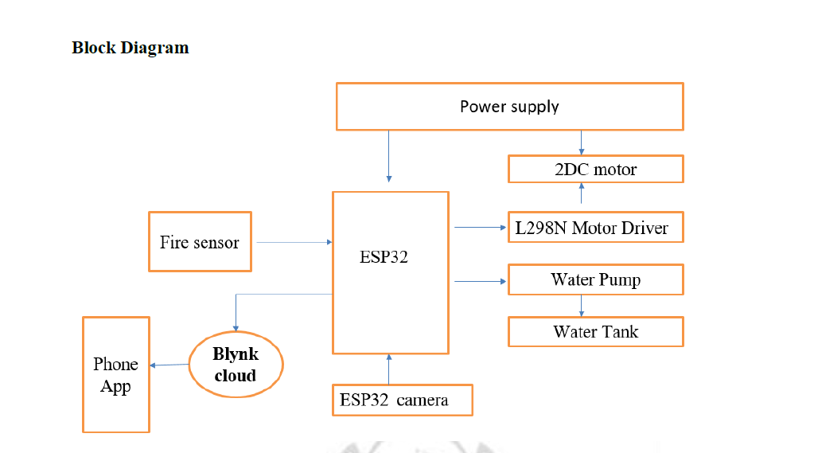
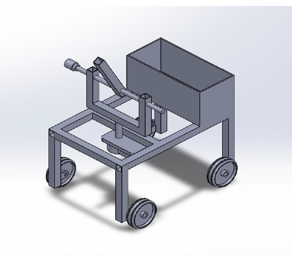
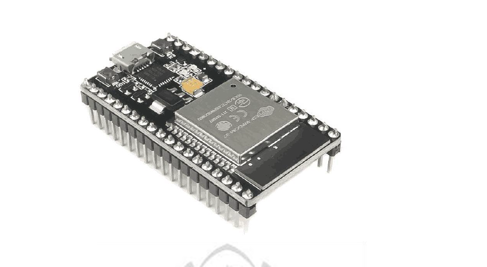

Working Prototype
The prototype uses an ESP32 camera for surveillance, RF remote for control, and a water tank with nozzle for extinguishing fire. The system ensures safe operation at a distance.

By Aman Jaiswar & Team
This project focuses on designing and developing a 360° rotating firefighting and movement detecting robot using IoT. The robot uses ESP32, flame sensors, and a water pump system to autonomously detect and suppress fire.

The robot integrates ESP32, DC motors, flame sensors, and a water pump. It is controlled remotely via Wi-Fi and mobile applications, with real-time video monitoring.


The prototype uses an ESP32 camera for surveillance, RF remote for control, and a water tank with nozzle for extinguishing fire. The system ensures safe operation at a distance.
The robot successfully demonstrates autonomous fire detection and suppression. Future scope includes AI-based navigation, machine learning for hazard prediction, and integration with smart city IoT networks.